<title>El viaje del Osito</title>
<meta name="claude:viewport-fit-sides" content="cover">
<link rel="preconnect" href="https://fonts.googleapis.com">
<link rel="preconnect" href="https://fonts.gstatic.com" crossorigin>
<link rel="stylesheet" href="https://fonts.googleapis.com/css2?family=Bricolage+Grotesque:opsz,wght@12..96,500;12..96,700;12..96,800&family=Instrument+Sans:wght@400;500;600&family=JetBrains+Mono:wght@400;500&display=swap">
<style>
/* Layout: una sola columna de lectura; el viaje se cuenta de cálido a frío y el storyboard es la pieza central, frame por frame con su tiempo. */
:root{
  --bg:#F5F6F8;          /* nieve de día */
  --surface:#FFFFFF;
  --ink:#141C3A;         /* azul noche */
  --muted:#5B6382;
  --line:#DDE1EA;
  --warm:#C9772A;        /* luz de lámpara */
  --cold:#3D6FB6;        /* frío polar */
  --chip:#EEF1F7;
  --display:"Bricolage Grotesque", "Avenir Next", system-ui, sans-serif;
  --body:"Instrument Sans", "Helvetica Neue", system-ui, sans-serif;
  --mono:"JetBrains Mono", ui-monospace, Menlo, monospace;
}
@media (prefers-color-scheme: dark){
  :root:not([data-theme="light"]){
    --bg:#0E1326; --surface:#161C33; --ink:#EEF0F7; --muted:#9AA2BF; --line:#2A3252;
    --warm:#E8A55E; --cold:#7FA6E0; --chip:#1D2440; color-scheme:dark;
  }
}
:root[data-theme="dark"]{
  --bg:#0E1326; --surface:#161C33; --ink:#EEF0F7; --muted:#9AA2BF; --line:#2A3252;
  --warm:#E8A55E; --cold:#7FA6E0; --chip:#1D2440; color-scheme:dark;
}
*{box-sizing:border-box}
body{background:var(--bg);color:var(--ink);font:16px/1.6 var(--body);-webkit-font-smoothing:antialiased}
.wrap{max-width:1120px;margin:0 auto;padding-left:max(16px, env(safe-area-inset-left, 0px));padding-right:max(16px, env(safe-area-inset-right, 0px))}
h1,h2,h3{font-family:var(--display);text-wrap:balance;margin:0;line-height:1.08}
h2{font-size:clamp(1.6rem,3.2vw,2.2rem);font-weight:700;letter-spacing:-.01em}
h3{font-size:1.2rem;font-weight:700}
p{margin:0}
.eyebrow{font:500 .74rem/1.4 var(--mono);letter-spacing:.12em;text-transform:uppercase;color:var(--muted)}
.lede{max-width:62ch;color:var(--muted);font-size:1.05rem}
section{padding-block:clamp(48px,7vw,88px);border-top:1px solid var(--line)}
section > .wrap{display:grid;gap:28px}
.sec-head{display:grid;gap:10px}

/* Hero */
header{padding-block:clamp(36px,6vw,72px) 0}
.hero{display:grid;gap:22px}
.hero h1{font-size:clamp(2.8rem,8vw,6rem);font-weight:800;letter-spacing:-.03em}
.hero h1 span{display:block;font-weight:500;font-size:.36em;letter-spacing:0;color:var(--muted);margin-bottom:.35em}
.logline{font-size:clamp(1.15rem,2.2vw,1.45rem);max-width:40ch;line-height:1.45}
.hero-img{margin-top:8px;border-radius:6px;overflow:hidden;aspect-ratio:16/9;max-width:100%;background:var(--chip)}
.hero-img img{width:100%;height:100%;object-fit:cover;display:block}
.specs{display:grid;grid-template-columns:repeat(4,minmax(0,1fr));border:1px solid var(--line);border-radius:6px;background:var(--surface)}
.specs div{padding:16px 18px;border-left:1px solid var(--line);display:grid;gap:4px;min-width:0}
.specs div:first-child{border-left:0}
.specs b{font:600 1.05rem/1.3 var(--body)}
.pend{color:var(--warm)}
@media (max-width:760px){.specs{grid-template-columns:repeat(2,minmax(0,1fr))}.specs div:nth-child(3){border-left:0}.specs div:nth-child(n+3){border-top:1px solid var(--line)}}

/* Idea */
.idea{display:grid;grid-template-columns:1.1fr .9fr;gap:40px;align-items:start}
.idea > *{min-width:0}
.idea p + p{margin-top:14px}
.closer{background:var(--ink);color:var(--bg);border-radius:6px;padding:32px 28px;display:grid;gap:18px}
.closer .eyebrow{color:inherit;opacity:.65}
.closer strong{font:800 clamp(1.5rem,3vw,2rem)/1.1 var(--display);letter-spacing:-.01em}
.closer em{font-style:normal;font:500 1.05rem/1.3 var(--body);opacity:.85}
.side{display:grid;gap:14px}
.music{display:flex;align-items:center;gap:16px;padding:18px 20px;border:1px solid var(--line);border-radius:6px;background:var(--surface);color:var(--ink);text-decoration:none}
.music:hover{border-color:var(--cold)}
.music:focus-visible{outline:2px solid var(--cold);outline-offset:2px}
.play{flex:none;width:42px;height:42px;border-radius:50%;background:var(--ink);position:relative}
.play::after{content:"";position:absolute;left:16px;top:13px;border-style:solid;border-width:8px 0 8px 13px;border-color:transparent transparent transparent var(--bg)}
.music-txt{display:grid;gap:2px;min-width:0}
.music-txt b{font:700 1.1rem/1.2 var(--display)}
.music-txt small{color:var(--muted);font-size:.82rem}
@media (max-width:760px){.idea{grid-template-columns:1fr}}

/* Mundo */
.rules{display:grid;grid-template-columns:repeat(3,minmax(0,1fr));gap:28px}
.rules div{display:grid;gap:8px;align-content:start}
.rules p{color:var(--muted)}
@media (max-width:760px){.rules{grid-template-columns:1fr}}
.route{display:grid;gap:10px}
.route-bar{height:8px;border-radius:4px;background:linear-gradient(90deg,var(--warm) 0%,#C98F4E 45%,#B5604A 62%,var(--cold) 80%,#BFD3EE 100%)}
.route ol{list-style:none;margin:0;padding:0;display:grid;grid-template-columns:repeat(7,minmax(0,1fr));gap:6px}
.route li{font-size:.86rem;line-height:1.3;display:grid;gap:2px;min-width:0}
.route li small{font:400 .7rem/1.3 var(--mono);color:var(--muted)}
@media (max-width:760px){.route ol{grid-template-columns:repeat(4,minmax(0,1fr));row-gap:14px}}

/* Personajes */
.chars{display:grid;grid-template-columns:1.25fr .75fr;gap:24px}
.chars > *{min-width:0}
.card{background:var(--surface);border:1px solid var(--line);border-radius:6px;overflow:hidden;display:grid;align-content:start}
.card-body{padding:22px;display:grid;gap:14px}
.card img{display:block;width:100%;max-width:100%}
.tag{display:inline-block;font:500 .7rem/1 var(--mono);letter-spacing:.08em;text-transform:uppercase;padding:6px 8px;border-radius:3px;background:var(--chip);color:var(--muted);justify-self:start}
.tag.warm{color:var(--warm)}
.traits{display:grid;grid-template-columns:repeat(2,minmax(0,1fr));gap:6px 18px;margin:0;padding:0;list-style:none;font-size:.95rem}
.traits li::before{content:"";display:inline-block;width:6px;height:6px;border-radius:50%;background:var(--cold);margin-right:9px;vertical-align:2px}
.avoid{font-size:.9rem;color:var(--muted);border-top:1px solid var(--line);padding-top:14px}
.avoid b{color:var(--ink)}
.pair{display:grid;grid-template-columns:1fr 1fr;border-top:1px solid var(--line)}
.pair img{aspect-ratio:16/9;object-fit:cover}
.pair img + img{border-left:1px solid var(--line)}
@media (max-width:860px){.chars{grid-template-columns:1fr}}
@media (max-width:480px){.traits{grid-template-columns:1fr}}

/* Storyboard */
.sb-tools{display:flex;flex-wrap:wrap;align-items:center;gap:12px 18px;justify-content:space-between}
.toggle{display:inline-flex;border:1px solid var(--line);border-radius:5px;overflow:hidden;background:var(--surface)}
.toggle button{font:500 .8rem/1 var(--mono);padding:10px 14px;border:0;background:transparent;color:var(--muted);cursor:pointer}
.toggle button[aria-pressed="true"]{background:var(--ink);color:var(--bg)}
.toggle button:focus-visible{outline:2px solid var(--cold);outline-offset:-2px}
.change{font-size:.92rem;max-width:70ch;padding:12px 14px;border-radius:5px;background:var(--chip)}
.change b{font:500 .7rem/1.4 var(--mono);letter-spacing:.1em;text-transform:uppercase;color:var(--cold);margin-right:8px}
.note{font-size:.92rem;color:var(--muted);max-width:70ch}
.note b{color:var(--ink)}
.frames{display:grid;gap:40px}
.frame{display:grid;grid-template-columns:minmax(0,1.35fr) minmax(0,1fr);gap:28px;align-items:start}
.frame > *{min-width:0}
.shot{position:relative;aspect-ratio:16/9;max-width:100%;border-radius:6px;overflow:hidden;background:var(--chip)}
.shot img{width:100%;height:100%;object-fit:cover;display:block}
.crop{position:absolute;top:0;bottom:0;width:31.64%;left:calc(var(--fx,.5) * 100% - 15.82%);box-shadow:0 0 0 2000px rgba(10,14,30,.62);outline:2px solid #fff;outline-offset:-2px;opacity:0;transition:opacity .25s}
.show-916 .crop{opacity:1}
.crop span{position:absolute;top:8px;left:8px;font:500 .66rem/1 var(--mono);color:#fff;letter-spacing:.06em}
.meta{display:grid;gap:12px}
.meta-top{display:flex;align-items:baseline;gap:14px;flex-wrap:wrap}
.num{font:800 2.6rem/1 var(--display);color:var(--line);letter-spacing:-.02em}
.tc{font:500 .78rem/1 var(--mono);color:var(--muted);padding:6px 8px;border:1px solid var(--line);border-radius:3px}
.meta p{color:var(--muted)}
.beats{display:flex;flex-wrap:wrap;gap:6px}
.beats span{font-size:.8rem;padding:4px 9px;border-radius:20px;background:var(--chip)}
.talk{border-left:2px solid var(--warm);padding-left:14px;font-size:.92rem;display:grid;gap:4px}
.talk b{font:500 .7rem/1.4 var(--mono);letter-spacing:.1em;text-transform:uppercase;color:var(--warm)}
.frame.end .shot{display:grid;place-items:center;background:var(--ink);color:var(--bg);text-align:center;padding:24px}
.frame.end .shot strong{font:800 clamp(1.1rem,2.6vw,1.9rem)/1.15 var(--display);display:block;max-width:18ch;margin:0 auto 14px}
.frame.end .shot em{font-style:normal;opacity:.8}
@media (max-width:820px){.frame{grid-template-columns:1fr;gap:16px}}

/* Pendientes */
.todo{display:grid;grid-template-columns:repeat(auto-fit,minmax(min(100%,240px),1fr));gap:16px}
.todo div{background:var(--surface);border:1px solid var(--line);border-radius:6px;padding:18px;display:grid;gap:6px;align-content:start}
.todo p{color:var(--muted);font-size:.93rem}
footer{border-top:1px solid var(--line);padding-block:28px 48px;color:var(--muted);font-size:.85rem}
@media (prefers-reduced-motion:reduce){*{transition:none!important}}
</style>

<header>
  <div class="wrap hero">
    <p class="eyebrow">Comercial navideño · Mundana × Felpita · Documento de trabajo v2 · 17/11/2026</p>
    <h1><span>Felpita</span>El viaje del Osito</h1>
    <p class="logline">Una Navidad, un osito emprende un viaje extraordinario para estar cerca de su abuela.</p>
    <div class="specs">
      <div><span class="eyebrow">Duración</span><b>50 a 60 s</b></div>
      <div><span class="eyebrow">Destino</span><b>Medios digitales</b></div>
      <div><span class="eyebrow">Formato</span><b class="pend">9:16 o 16:9, a definir</b></div>
      <div><span class="eyebrow">Estructura</span><b>8 key frames · 18 a 22 planos</b></div>
    </div>
    <div class="hero-img">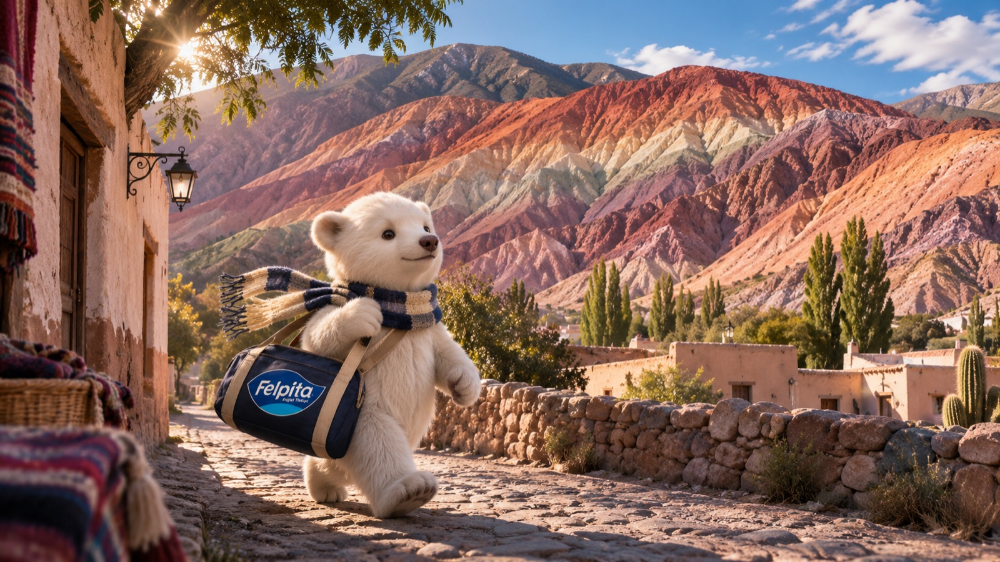</div>
  </div>
</header>

<section id="idea">
  <div class="wrap idea">
    <div class="sec-head">
      <p class="eyebrow">La idea</p>
      <h2>La Navidad es buena para estar cerca</h2>
      <p class="lede">Felpita prepara un bolso con una bufanda, galletitas, una foto y un regalo. Sale de su casa en un barrio argentino, toma el tren, cruza el país hacia el norte, de las sierras de Córdoba a los cerros de Jujuy, y llega a la nieve, donde su abuela vive en una cabaña.</p>
      <p class="lede">El viaje es todo lo que somos capaces de hacer para estar con quienes queremos. Lo importante no es la aventura, es el encuentro: el regalo, el abrazo, el pañuelo cuando la abuela se emociona y la Navidad compartida.</p>
    </div>
    <div class="side">
      <div class="closer">
        <p class="eyebrow">Cierre de campaña</p>
        <strong>LA NAVIDAD ES BUENA PARA ESTAR CERCA</strong>
        <em>FELPITA. Buenos para vos.</em>
      </div>
      <a class="music" href="https://youtu.be/usZPFIT5phM" target="_blank" rel="noopener">
        <span class="play" aria-hidden="true"></span>
        <span class="music-txt"><span class="eyebrow">Banda sonora propuesta</span><b>Somewhere Out There</b><small>An American Tail (1986) · Escuchar en YouTube</small></span>
      </a>
    </div>
  </div>
</section>

<section id="mundo">
  <div class="wrap">
    <div class="sec-head">
      <p class="eyebrow">Dirección visual</p>
      <h2>Un osito de marca en un mundo real</h2>
    </div>
    <div class="rules">
      <div><h3>Fotografía real</h3><p>Los lugares parecen filmados con cámara de cine: luz creíble, materiales y arquitectura auténticos. No es una película animada ni un cuento infantil.</p></div>
      <div><h3>Argentina se siente argentina</h3><p>Barrio, veredas y tren reconocibles, y en el camino los paisajes más típicos del país: las sierras de Córdoba y los cerros de Jujuy. La nieve aparece recién al final del viaje.</p></div>
      <div><h3>La luz cuenta el viaje</h3><p>Calidez en la casa, variedad en el camino, cansancio en las sierras y el contraste final entre el frío de afuera y el interior cálido de la abuela. Navidad presente, sin saturar.</p></div>
    </div>
    <div class="route" aria-label="Recorrido de cálido a frío">
      <div class="route-bar"></div>
      <ol>
        <li>Casa<small>cálido</small></li>
        <li>Barrio<small>templado</small></li>
        <li>Tren<small>urbano</small></li>
        <li>Córdoba<small>sierras</small></li>
        <li>Jujuy<small>cerros</small></li>
        <li>Polo Norte<small>nieve</small></li>
        <li>Cabaña<small>cálido adentro</small></li>
      </ol>
    </div>
  </div>
</section>

<section id="personajes">
  <div class="wrap">
    <div class="sec-head">
      <p class="eyebrow">Personajes</p>
      <h2>Felpita y su abuela</h2>
      <p class="lede">Felpita es el osito oficial de la marca y tiene que ser el mismo en todos los planos, con cualquier pose, ángulo o luz. La abuela es una osa del mismo universo, una versión mayor del mismo diseño.</p>
    </div>
    <div class="chars">
      <article class="card">
        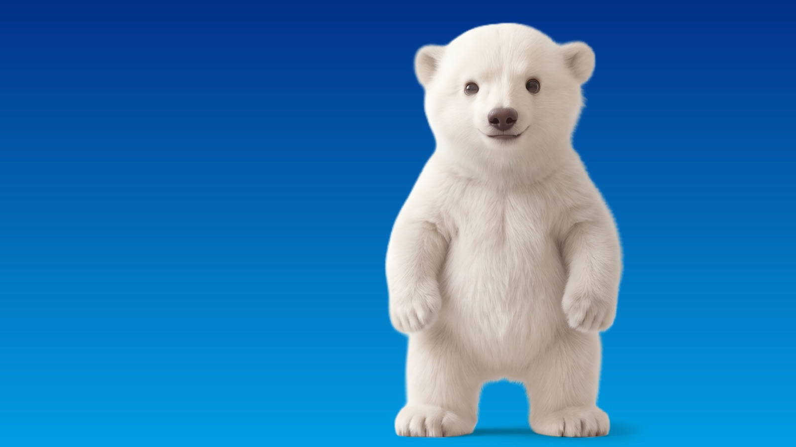
        <div class="card-body">
          <span class="tag">Felpita · referencia oficial</span>
          <ul class="traits">
            <li>Altura de 60 cm</li>
            <li>Pelaje blanco marfil</li>
            <li>Cabeza predominante</li>
            <li>Hocico corto y redondeado</li>
            <li>Orejas chicas y redondas</li>
            <li>Patas cortas, pies grandes</li>
          </ul>
          <p class="avoid"><b>Evitar:</b> hocico largo, patas largas y un realismo de oso real que le quite ternura. Mirada amable y expresiva, sin gestos exagerados.</p>
        </div>
        <div class="pair">
          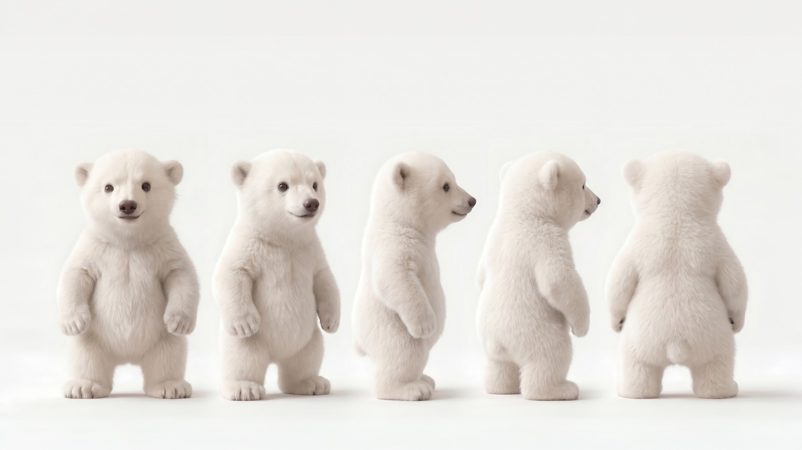
          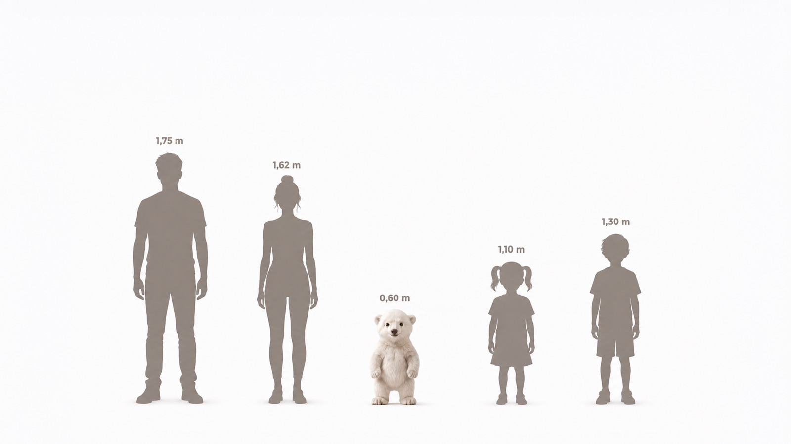
        </div>
      </article>
      <article class="card">
        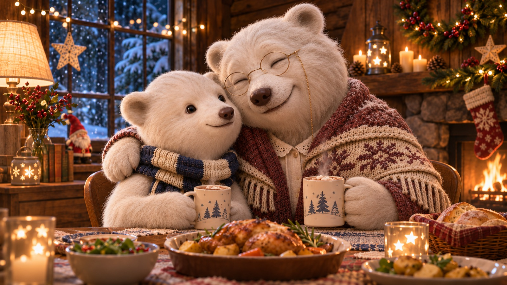
        <div class="card-body">
          <span class="tag warm">Abuela · diseño a definir</span>
          <p>Una osa, no una persona. Tiene que comunicar edad, ternura y parentesco sin salirse del diseño de Felpita.</p>
          <p class="avoid">Exploración actual: anteojos, pelaje un poco más gris y chal tejido. El vestuario acompaña, no la convierte en caricatura.</p>
        </div>
      </article>
    </div>
  </div>
</section>

<section id="storyboard">
  <div class="wrap">
    <div class="sec-head">
      <p class="eyebrow">Storyboard</p>
      <h2>Ocho momentos y un cierre</h2>
      <p class="lede">Cada key frame resume un tramo del viaje, no un plano. Los tiempos son una primera propuesta para conversar el ritmo.</p>
      <p class="change"><b>Nuevo en v2</b> Entre Buenos Aires y el Polo Norte el viaje pasa por las sierras de Córdoba y los cerros de Jujuy, y el tren queda en la estación Avellaneda.</p>
    </div>
    <div class="sb-tools">
      <p class="note"><b>Storyboard exploratorio de la narrativa.</b> Estas imágenes ordenan el recorrido y los momentos de la historia, pero todavía no sostienen un estilo: por momentos se ven como película animada y el oso aún no es el oficial. La próxima versión lleva todo al mundo real con el Felpita oficial.</p>
      <div class="toggle" role="group" aria-label="Ver formato">
        <button type="button" id="f169" aria-pressed="true">16:9</button>
        <button type="button" id="f916" aria-pressed="false">Ver recorte 9:16</button>
      </div>
    </div>

    <div class="frames" id="frames">
      <article class="frame">
        <div class="shot" style="--fx:.45">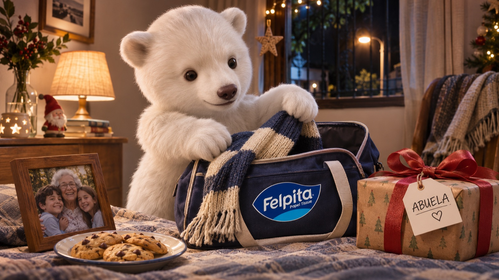<div class="crop"><span>9:16</span></div></div>
        <div class="meta">
          <div class="meta-top"><span class="num">01</span><h3>Preparativos</h3><span class="tc">0:00–0:07</span></div>
          <p>En su casa de barrio, Felpita guarda en el bolso la bufanda, las galletitas, la foto y el regalo para la abuela. Presentamos al personaje, su hogar y la intención del viaje.</p>
          <div class="beats"><span>bufanda</span><span>galletitas</span><span>foto</span><span>regalo «ABUELA»</span></div>
        </div>
      </article>

      <article class="frame">
        <div class="shot" style="--fx:.5">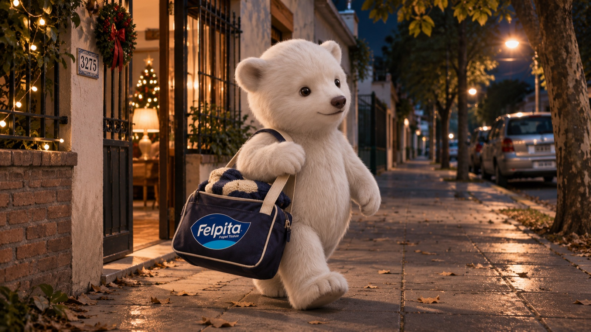<div class="crop"><span>9:16</span></div></div>
        <div class="meta">
          <div class="meta-top"><span class="num">02</span><h3>La partida</h3><span class="tc">0:07–0:12</span></div>
          <p>Sale de su casa con el bolso. La vereda, la reja y los árboles dejan claro que la historia empieza en Argentina.</p>
          <div class="talk"><b>Para conversar</b>Sale de noche y en el frame siguiente la estación es de día. ¿Sale al amanecer, o el viaje arranca a la mañana siguiente?</div>
        </div>
      </article>

      <article class="frame">
        <div class="shot" style="--fx:.44">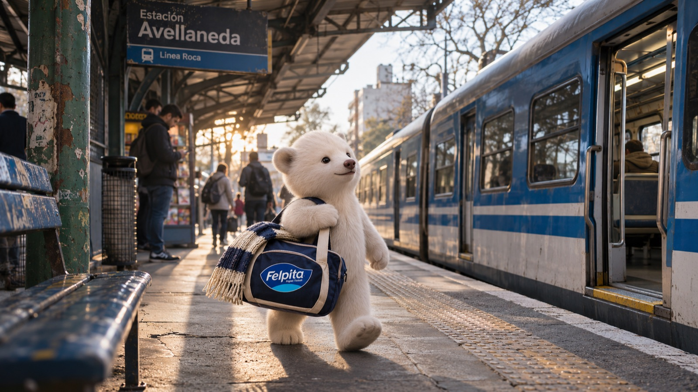<div class="crop"><span>9:16</span></div></div>
        <div class="meta">
          <div class="meta-top"><span class="num">03</span><h3>El tren</h3><span class="tc">0:12–0:18</span></div>
          <p>Estación Avellaneda, Línea Roca. Felpita sube al tren entre la gente que va y viene; la vida cotidiana a su alrededor lo hace ver todavía más extraordinario.</p>
          <div class="beats"><span>estación Avellaneda</span><span>Línea Roca</span></div>
        </div>
      </article>

      <article class="frame">
        <div class="shot" style="--fx:.36">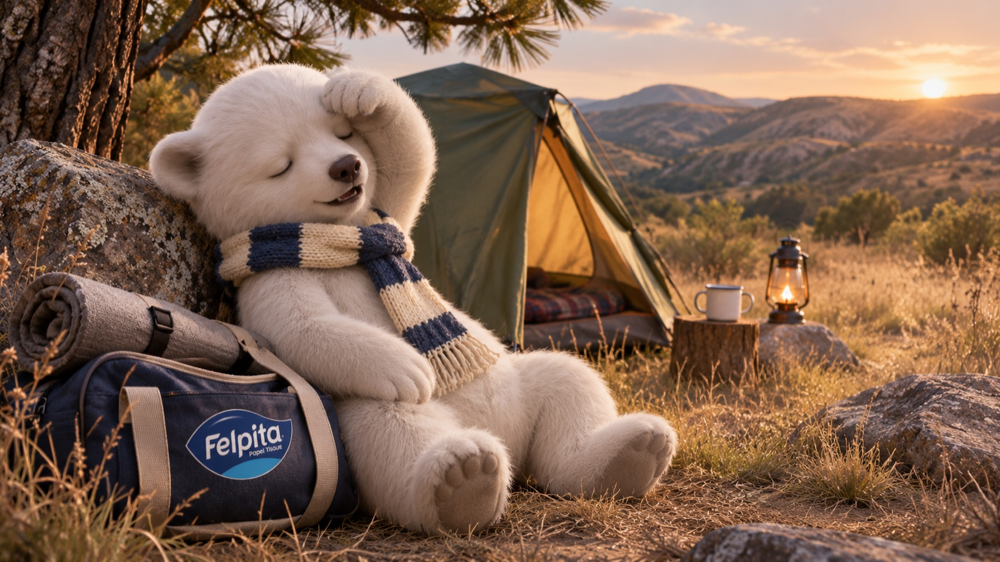<div class="crop"><span>9:16</span></div></div>
        <div class="meta">
          <div class="meta-top"><span class="num">04</span><h3>Las sierras de Córdoba</h3><span class="tc">0:18–0:25</span></div>
          <p>El viaje sigue hacia el norte. Al atardecer, en un camping de las sierras, Felpita se detiene cansado. El camino empieza a exigirle esfuerzo.</p>
          <div class="beats"><span>camping</span><span>cansancio</span><span>atardecer</span></div>
        </div>
      </article>

      <article class="frame">
        <div class="shot" style="--fx:.37"><div class="crop"><span>9:16</span></div></div>
        <div class="meta">
          <div class="meta-top"><span class="num">05</span><h3>Jujuy</h3><span class="tc">0:25–0:31</span></div>
          <p>Un nuevo día, más al norte. Felpita retoma la marcha por un pueblo de piedra y adobe, con el Cerro de los Siete Colores detrás.</p>
          <div class="beats"><span>Cerro de los Siete Colores</span><span>Purmamarca</span></div>
        </div>
      </article>

      <article class="frame">
        <div class="shot" style="--fx:.45">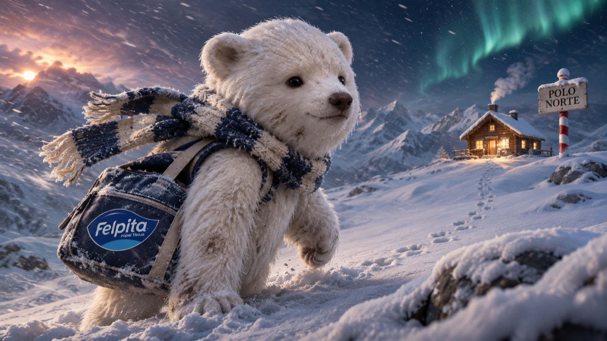<div class="crop"><span>9:16</span></div></div>
        <div class="meta">
          <div class="meta-top"><span class="num">06</span><h3>El Polo Norte</h3><span class="tc">0:31–0:37</span></div>
          <p>El paisaje cambia por completo. Felpita avanza por la nieve, con viento y aurora en el cielo, y descubre a lo lejos la cabaña iluminada.</p>
          <div class="beats"><span>primera nieve del viaje</span><span>huellas</span><span>cabaña</span></div>
          <div class="talk"><b>Para conversar</b>¿El cartel "Polo Norte" suma o alcanza con el paisaje para entender dónde está?</div>
        </div>
      </article>

      <article class="frame">
        <div class="shot" style="--fx:.45">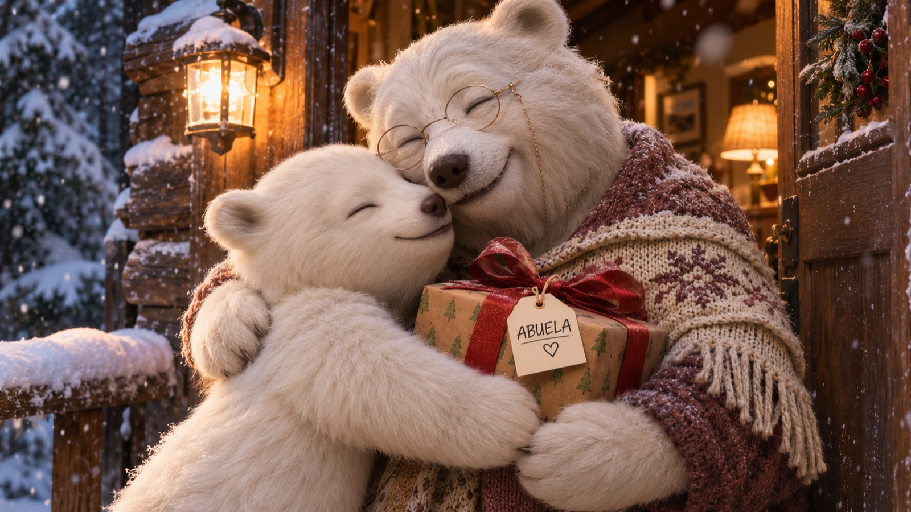<div class="crop"><span>9:16</span></div></div>
        <div class="meta">
          <div class="meta-top"><span class="num">07</span><h3>El reencuentro</h3><span class="tc">0:37–0:47</span></div>
          <p>Golpea la puerta. La abuela abre, Felpita le entrega el regalo que dice «ABUELA» y se abrazan. La abuela se emociona y Felpita le ofrece un pañuelo. Es el momento más importante de la película.</p>
          <div class="beats"><span>golpe a la puerta</span><span>regalo «ABUELA»</span><span>abrazo</span><span>pañuelo</span></div>
          <div class="talk"><b>Para conversar</b>El Bear System incluye pañuelos entre los productos de Felpita. Si es así, este gesto puede ser el momento de producto. ¿Se ve la marca o queda sugerido?</div>
        </div>
      </article>

      <article class="frame">
        <div class="shot" style="--fx:.5"><div class="crop"><span>9:16</span></div></div>
        <div class="meta">
          <div class="meta-top"><span class="num">08</span><h3>Navidad juntos</h3><span class="tc">0:47–0:52</span></div>
          <p>Abuela y nieto comparten la mesa en el interior cálido de la cabaña. El momento prepara el cierre.</p>
        </div>
      </article>

      <article class="frame end">
        <div class="shot"><div><strong>LA NAVIDAD ES BUENA PARA ESTAR CERCA</strong><em>FELPITA. Buenos para vos.</em></div></div>
        <div class="meta">
          <div class="meta-top"><span class="num">09</span><h3>Cierre</h3><span class="tc">0:52–0:58</span></div>
          <p>La ejecución gráfica y sonora del cierre se resuelve en edición junto con Mundana.</p>
        </div>
      </article>
    </div>
  </div>
</section>

<section id="pendientes">
  <div class="wrap">
    <div class="sec-head">
      <p class="eyebrow">Próximos pasos</p>
      <h2>Lo que falta definir</h2>
    </div>
    <div class="todo">
      <div><h3>Formato</h3><p>9:16 o 16:9, antes de producir los planos definitivos. El botón "Ver recorte 9:16" muestra cómo quedaría cada frame.</p></div>
      <div><h3>Abuela</h3><p>Diseño definitivo y prueba junto a Felpita.</p></div>
      <div><h3>Storyboard</h3><p>Validar los ocho frames con el oso oficial y la dirección realista.</p></div>
      <div><h3>Guion técnico</h3><p>Cantidad de planos, acciones y ritmo del viaje.</p></div>
      <div><h3>Música y cierre</h3><p>Propuesta: Somewhere Out There. Falta definir versión y derechos, diseño sonoro y ejecución gráfica del cierre.</p></div>
    </div>
  </div>
</section>

<footer><div class="wrap">Felpita · El viaje del Osito · Documento de trabajo para iterar guion y storyboard. Las imágenes son exploraciones, no frames aprobados.</div></footer>

<script>
(function(){
  var frames=document.getElementById('frames'),a=document.getElementById('f169'),b=document.getElementById('f916');
  function set(v){frames.classList.toggle('show-916',v);a.setAttribute('aria-pressed',String(!v));b.setAttribute('aria-pressed',String(v));}
  a.addEventListener('click',function(){set(false)});
  b.addEventListener('click',function(){set(true)});
})();
</script>
